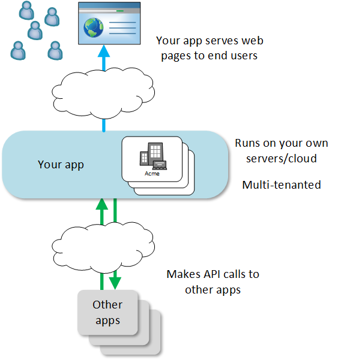
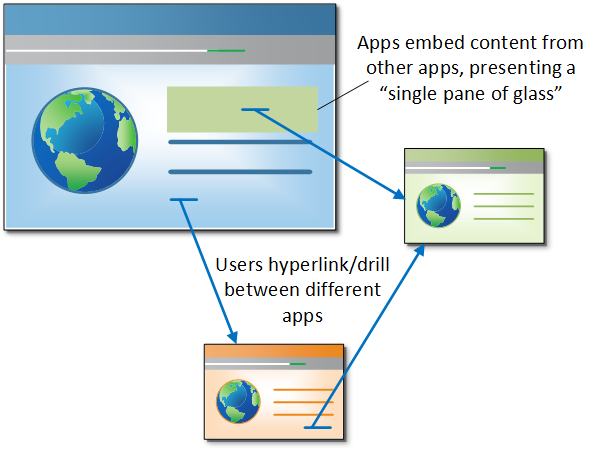

A typical app has a familiar web architecture like this.
The end user uses the app via their web browser on desktop, tablet or smartphone. Most systems present as a set of web pages, with or without ajax (SPA).
Behind the scenes, to create the web pages the user sees (or to serve up the smaller fragments used in an SPA), the app makes API calls to other apps.
For example, a career site app that renders the organizations's current vacancies would consume the GET /jobs API to fetch the open jobs from the applicant tracking system (ATS).
Multitenancy is a central concept in TAS. An account holder in TAS can create multiple tenants. Each tenant is separate from the others, and separate from all other account holder's tenants.
When a user installs an app/microservice in TAS, they are doing so for a specific tenant. Typically a tenant has many users, all of whom can use the app once it is installed (subject to roles, permissions, etc.). This is different from enterprise app store platforms such as Apperian, which focus on installing mobile apps for individual end users.
In traditional HR applications, the user logs into the system and stays there all day. When the user needs to use a different system, they open a new browser tab to log in to that system. If the stars are in alignment, the user's organization might have set up single sign on (SSO), and they might be automatically logged in to the other system. Mainly though the user experience is of using two separate systems.
With microservices, the user interacts not just with one, but with tens or hundreds of small apps.
This interaction still happens through the web browser, and when done well, the user moves seamlessly between the user interfaces of the different apps.
There are two ways that users can interact with a cluster of microservices.
With hyperlinking, the user goes from a web page in one app to a web page in another. For example, the user wants to drill in to an employee's recent performance management outcomes, so they click straight through from the recruitment platform to the performance management system. The link takes them straight to the correct page for the employee (aka deep linking). They are instantly logged in (via SSO).
Embedding is a tighter integration model. With embedding, one app embeds content from another directly into its own web page. The content may be discrete web components (buttons, images etc.), larger blocks of content, or even entire web pages rendered within iframes. The advantage of this "single pane of glass" integration is that the user sees more information on a single page, and does not have to click away.
TAS supports both of these models of interaction.
To you, the app developer, TAS works like this:
You define your app at https://developer.talentappstore.com, including details of each API that your app consumes or produces.
You code your app in any programming language, and host it on the hosting platform of your choice.
A tenant (customer) finds your app at the storefront at https://www.talentappstore.com and clicks to install it.
The TAS core sends a provisioning message to your app, alerting it to the new customer. Your app might insert into the customers table, spin up a new docker container, create a record in your billing platform, or whatever.
Your app is now live for the tenant. It can now start communicating through RESTful APIs with the other apps that the tenant has already installed.
Your app's user interface can now start responding to the tenant's users. Users can browse the web pages of your app, directly or within larger web pages served up from multiple apps, all working collaboratively on behalf of the tenant.